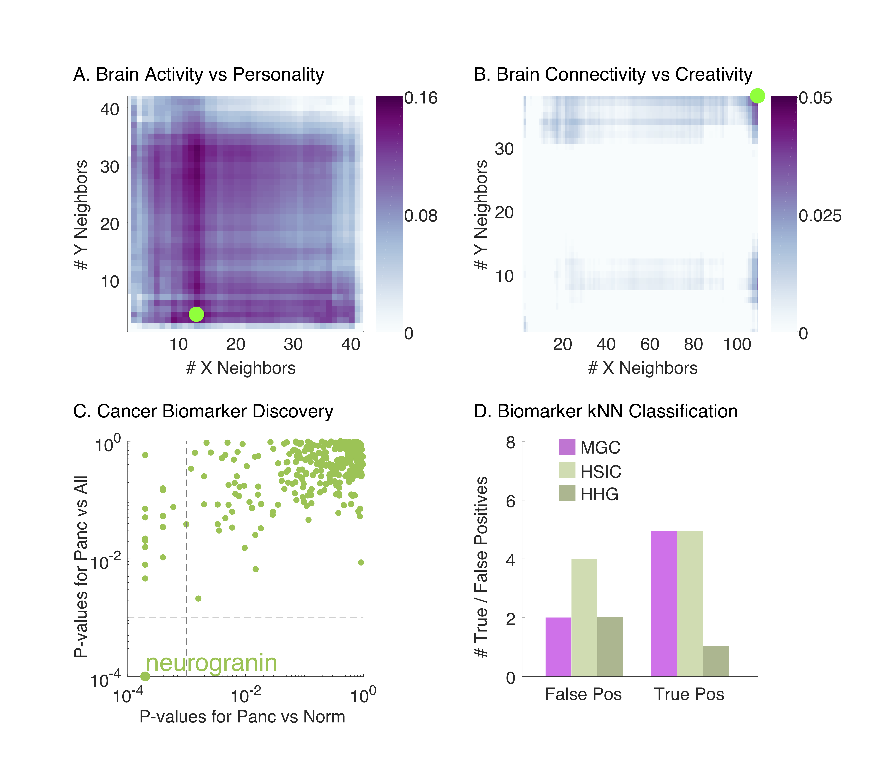
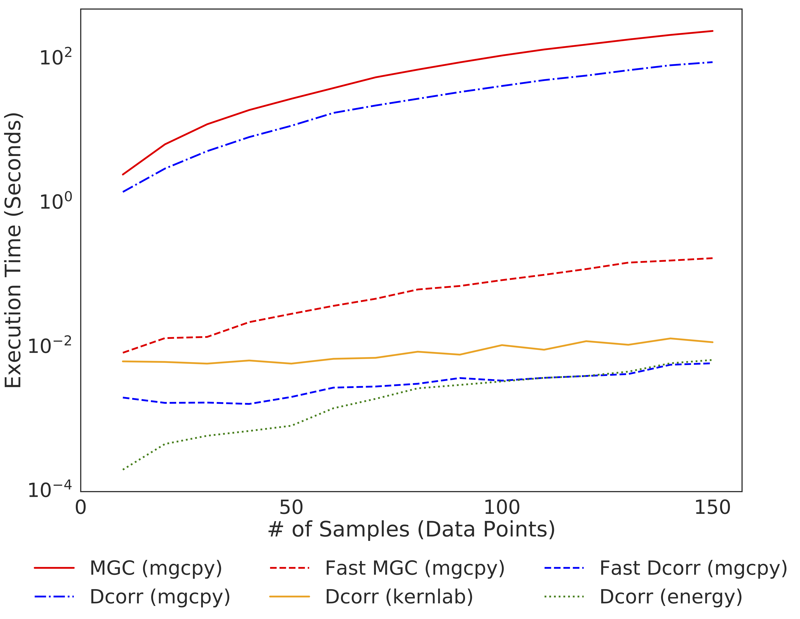
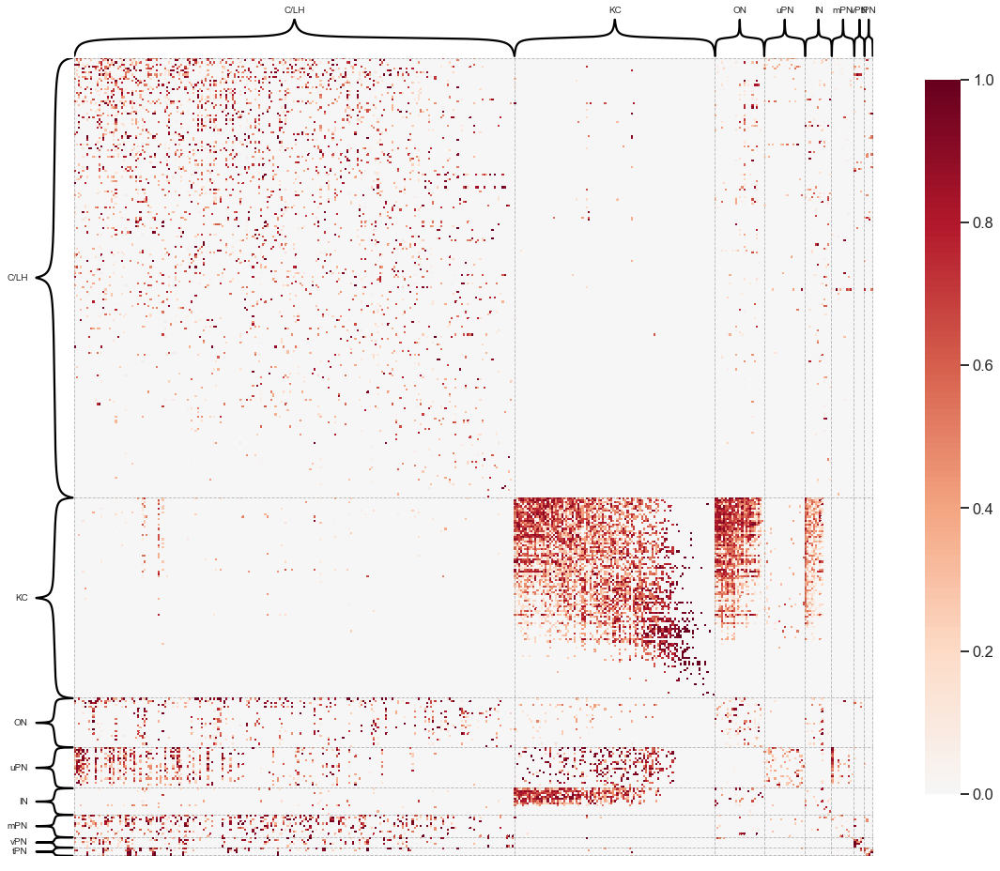

<!-- class: middle --> name:opening #### Discovering and deciphering relationships across disparate data modalities Joshua T. Vogelstein | <https://neurodata.io/mgc> <br><br><br><br><br><br><br><br><br> <!-- <img src="images/funding/jhu_bme_blue.png" STYLE="HEIGHT:95px;"/> <img src="images/funding/KNDI.png" STYLE="HEIGHT:95px;"/> --> .footnote[[jovo@jhu.edu](mailto:jovo@jhu.edu) | <http://neurodata.io/talks/> | [@neuro_data](https://twitter.com/neuro_data)] <br> --- #### Motivation <br> -- - "Understand" the relationship between physical (brain) and mental properties -- - Question 1: are the two related at all? -- - Question 2: how are they related? -- <br><br> - Note: many efforts dedicated to Q1, fewer to Q2. - We will formally address Q1, and address Q2 --- <!-- class: center, middle --> class: left #### One often desires to test for independence <br> <br> | \\(X\\) | \\(Y\\) | | :---: | :---: | | clouds | grass wetness | | brain connectivity | creativity | | brain shape | health | | CLARITY | condition | | gene expression | cancer | -- | anything | anything else | --- #### Formal Definition of Independence Testing <br><br> <!-- <img src="images/setup.png" alt="Drawing" style="width: 60%;"/> --> $$(X\_i,Y\_i) \sim F\_{XY} = F\_{X|Y} F\_Y, \quad i \in \{1,\ldots,n\}$$ $$H\_0: F\_{XY} = F\_X F\_Y $$ $$H\_A: F\_{XY} \neq F\_X F\_Y $$ --- class: top, left ## Outline <br> - intuition - simulations - real data - extensions - theory - discussion --- class: middle # .center[intuition] --- class: top, left #### Intuitive Desiderata of Testing Procedure <!-- <br> --> 1. Performant under *any* joint distribution - low- and high-dimensional - Euclidean and structured data (eg, sequences, images, networks, shapes) - linear and nonlinear relationships 6. Reveals the "geometry" of dependence 5. Is computational efficiency Provides a tractable algorithm that addresses the two motivating questions: - Question 1: are the two related at all? - Question 2: how are they related? --- class: center ### correlation coefficient <img src="images/linear.png" alt="Drawing" style="position:absolute; TOP: 350px; LEFT: 300px; height: 300px;"/> <!-- $$ r^2 = \frac{(\sum x\_i - \bar{x}) (y\_i - \bar{y})}{\sum (x\_i - \bar{x})^2 \sum (y\_i- \bar{y})^2 } --> $$r\_{XY}^2 = \frac{(\sum\_{i=1}^n ( x\_i - \bar{x}) (y\_i - \bar{y}))^2}{\sum\_{i=1}^n (x\_i - \bar{x})^2 \sum\_{i=1}^n (y\_i- \bar{y})^2} $$ --- class: center ### **mantel** correlation coefficient <img src="images/linear.png" alt="Drawing" style="position:absolute; TOP: 350px; LEFT: 300px; height: 300px;"/> <!-- $$ r^2 = \frac{(\sum x\_i - \bar{x}) (y\_i - \bar{y})}{\sum (x\_i - \bar{x})^2 \sum (y\_i- \bar{y})^2 } --> $$r\_{XY}^2 = \frac{(\sum\_{i=1}^n ( x\_i - \bar{x}) (y\_i - \bar{y}))^2}{\sum\_{i=1}^n (x\_i - \bar{x})^2 \sum\_{i=1}^n (y\_i- \bar{y})^2} $$ <br> $$d\_{XY}^2 = \frac{(\sum\_{i,\color{red}{j}=1}^n ( x\_i - \color{red}{x\_j}) (y\_i - \color{red}{y\_j}))^2}{\sum\_{i,\color{red}{j}=1}^n (x\_i - \color{red}{x\_j})^2 \sum\_{i,\color{red}{j}=1}^n (y\_i- \color{red}{y\_j})^2} $$ --- class: center ### **generalized** correlation coefficient <!-- $$ r^2 = \frac{(\sum x\_i - \bar{x}) (y\_i - \bar{y})}{\sum (x\_i - \bar{x})^2 \sum (y\_i- \bar{y})^2 } --> $$r\_{XY}^2 = \frac{(\sum\_{i=1}^n ( x\_i - \bar{x}) (y\_i - \bar{y}))^2}{\sum\_{i=1}^n (x\_i - \bar{x})^2 \sum\_{i=1}^n (y\_i- \bar{y})^2} $$ <br> $$d\_{XY}^2 = \frac{(\sum\_{i,\color{red}{j}=1}^n ( x\_i - \color{red}{x\_j}) (y\_i - \color{red}{y\_j}))^2}{\sum\_{i,\color{red}{j}=1}^n (x\_i - \color{red}{x\_j})^2 \sum\_{i,\color{red}{j}=1}^n (y\_i- \color{red}{y\_j})^2} $$ <br> $$c\_{XY}^2 = \frac{(\sum\_{i,j=1}^n \color{red}{\sigma\_x}(x\_i,x\_j) \color{red}{\sigma\_y}(y\_i,y\_j))^2}{\sum\_{i,j=1}^n \color{red}{\sigma\_x}(x\_i,x\_j)^2 \sum\_{i,j=1}^n \color{red}{\sigma\_y}(y\_i,y\_j)^2} $$ --- ### local distance correlation <img src="images/linear.png" alt="Drawing" style="position:absolute; TOP: 150px; LEFT: 100px; height: 180px;"/> -- <img src="images/Fig1B.png" alt="Drawing" style="position:absolute; TOP: 150px; LEFT: 300px; height: 180px;"/> <!-- -- <img src="images/Fig_centered1Panel2.png" alt="Drawing" style="position:absolute; TOP: 150px; LEFT: 500px; height: 150px;"/> --> -- <div style="position:absolute; TOP: 150px; LEFT: 560px; height: 200px;"> dcorr(X,Y)=0.15, p-val < 0.001 <br> MGC(X,Y)=0.15, p-val < 0.001 </div> -- <img src="images/spiral.png" alt="Drawing" style="position:absolute; TOP: 400px; LEFT: 100px; height: 180px;"/> -- <img src="images/Fig8B.png" alt="Drawing" style="position:absolute; TOP: 400px; LEFT: 300px; height: 180px;"/> <!-- -- <img src="images/Fig_centered8Panel2.png" alt="Drawing" style="position:absolute; TOP: 400px; LEFT: 500px; height: 150px;"/> --> -- <div style="position:absolute; TOP: 400px; LEFT: 560px; height: 200px;"> dcorr(X,Y)=0.01, p-val 0.3 <br> MGC(X,Y)= .r[0.13], p-val < .r[0.001] </div> --- ### multiscale distance correlation - compute local dcorr **at all scales** - find scale with **max** smoothed test statistic - permutation test to determine p-value --- class: top, center ### Multiscale Generalized Correlation (MGC) <!-- <img src="https://github.com/neurodata/MGC/raw/master/Figures/FigA.png" alt="Drawing" style="width: 900px;"/> --> <img src="images/mgc-linear.png" style="width: 780px;"/> -- <img src="images/mgc-spiral.png" style="width: 780px;"/> -- <img src="images/mgc-flowchart.png" style="width: 780px;"/> --- class: top, left #### Intuitive Desiderata of Testing Procedure <br> 1. Performant under *any* joint distribution - low- and high-dimensional - Euclidean and structured data (eg, sequences, images, networks, shapes) - linear and nonlinear relationships 6. Reveals the "geometry" of dependence 5. Is computational efficiency Provides a tractable algorithm that addresses the two motivating questions: - Question 1: are the two related at all? - Question 2: how are they related? --- class: middle, center # .center[simulations] --- class: top, left ### 20 Different Functions (1D version) <img src="images/FigSimVisual.png" alt="local" style="width: 100%;"/> --- class: top, left ### Definitions - **power** is the probability of rejecting the null when the alternative is true <!-- - $N_\beta(t)$ := the # of samples required to achieve power $\beta$ using test statistic $t$ --> - **relative power** power of one approach minus power of another - $\beta_n^A(t)$ = power of test statistic $t$ given $n$ samples - $\beta_n(mgc)- \beta_n^A(t)$ <!-- ### Empirical Desiderata --> <!-- 1. statistical efficiency: $$N\_\beta(t') / N\_\beta( \text{MGC}) \geq 1 \text{ for all } --> <!-- n, \, d, \, F\_{XY}, \text{ and } t' $$ --> <!-- $$\beta\_n(\text{MGC}) > \beta\_n(t') \text{ for all } --> <!-- n, \, t' \in \mathcal{T}, \text{ and } F\_{XY} $$ --> <!-- 2. quantification of relationship --> --- class: top, left ### 1D Relative Power (MGC nearly dominates) <img src="images/mgc-1DPower.png" alt="local" style="width: 100%;"/> --- class: top, left ### HD Relative Power (MGC nearly dominates) <img src="images/mgc-HDPower.png" alt="local" style="width: 100%;"/> --- class: top, left ### MGC Outperforms Benchmarks <br> <img src="images/mgc-table.png" alt="local" style="width: 100%;"/> --- class: top, left #### MGC Reveals Geometry of Dependence <img src="images/mgc-maps.png" alt="local" style="width: 100%;"/> <!-- .center[ <img src="https://github.com/neurodata/MGC/raw/master/Figures/FigHDHeat.png" style="width: 900px;"/> ] --> --- class: middle, center # .center[real data] --- class: top, left ### Real Data Desiderata <br> 1. when we believe dependence, MGC obtains a small p-value 2. MGC provides insight into the geometry of real dependence 3. when there is no dependence, MGC correcly controls FPR --- class: top, left ### MGC Discovers Relationships between Brain & Mental Properties  <img src="images/mgc-brain-table.png" alt="Drawing" style="width: 100%;"/> --- class: top, left ### MGC Discovers Pancreatic Cancer Biomarkers <img src="images/mgc-real-cancer.png" alt="Drawing" style="width: 100%;"/> --- class: middle # .center[extensions] --- ### Fast MGC  --- ### K-Sample Tests are Independence Tests Recall this definition of independence testing $$(X\_i,Y\_i) \sim F\_{XY} = F\_{X|Y} F\_Y, \quad i \in \{1,\ldots,n\}$$ $$H\_0: F\_{XY} = F\_X F\_Y $$ $$H\_A: F\_{XY} \neq F\_X F\_Y $$ -- Here is the formal definition of 2-sample testing $$U\_i \sim F_U, \, i \in \{1,\ldots,n\} \quad V\_i \sim F\_V, \, i \in \{1,\ldots,m\}$$ $$H\_0: F\_{U} = F\_V $$ $$H\_A: F\_{U} \neq F\_V $$ -- Let $X = [U\_1, \ldots U\_n | V\_1,\ldots, V\_m]$ and $Y=[0 \ldots 0 | 1 \cdots 1 ]$. Now, testing whether $X$ and $Y$ are independent is equivalent to testing whether $F_U$ and $F_V$ are the same. --- class: top, left ### 20 Different 2-Sample Functions (2D version) <img src="images/mgc-rotation-sims.png" alt="local" style="height: 550px;"/> --- class: top, left ### Relative Power vs Sample Size for 2D Rotations <img src="images/mgc-rotation-samplesize.png" alt="local" style="height: 550px;"/> --- class: top, left ### Relative Power vs Angle for 2D Rotations <img src="images/mgc-rotation-angles.png" alt="local" style="height: 550px;"/> --- class: top, left ### Relative Power vs Dimension for Rotations <img src="images/mgc-rotation-dimension.png" alt="local" style="height: 550px;"/> --- ### Graph Equality Testing For example, are the left and right hemispheres of the larval Drosophila Mushroom Body sampled from the same distribution? $G=(V_1,E_1) \sim F_U, \quad H = (V_2, E_2) \sim F_V$ $H\_0: F\_{U} = F\_V , \quad H\_A: F\_{U} \neq F\_V $  --- ### Graph Independence Testing --- ### Time Series Testing --- class: middle, center # .center[theory] --- class: top, left ### Theoretical Desiderata <!-- <br> --> | name | principle | | --- | --- | | boundedness | $0 \leq t,T \leq 1 $| | symmetric | $T(X,Y) = T(Y,X)$ | | 1-linear. | $ T= 1 \Leftrightarrow y = A x + b$ | | 0-indep. | $T=0 \Leftrightarrow H(X \lvert Y) = H(X)$ | | ortho. invar. | $T(X,Y) = T(a_1 + b_1 C_1 X, a_2 + b_2 C_2 Y)$ | -- | univ. consist. | $\beta\_n(T) \to 1, \quad \forall \, F\_{XY}$ | | dominance | $\beta\_n(T) \geq \beta\_n(T'), \, \forall n,\, T' \in \mathcal{T}, \forall F\_{XY}$ | | convergence | $\beta_n(t) \to \beta_n(T)$ as $n \to \infty$ | <!-- | efficiency | $\mathbb{E}\beta_n(t) \geq \mathbb{E}\beta_n(t'), \, \forall n, t' \in \mathcal{T}$ | --> <!-- | | comp. efficiency | $\mathcal{O}(d n^2 \log n)$ space and time | --> <!-- 9. "reveal the "geometry/topology" of the relationship" --> --- class: top, left #### MGC is a Reasonable Dependence Statistic <br> Thm: Oracle MGC has the following properties: - 0 ≥ MGC ≥ 1 - MGC = 0 only under independence - MGC is symmetric - MGC = 1 only under linear relationship - MGC is invariant to rotation, translation, and scale of X and/or Y --- class: left ### MGC has power 1 for all F<sub>XY</sub> <br><br> Lemma: \\( \beta_n (T^*) \to 1 \\) as \\( n \to \infty \\) whenever \\( E [X] < \infty. \\) <!-- <img src="images/thm1.png" style="position:absolute; LEFT: 200px; TOP: 300px; height: 40px;"/> --> --- class: left ### Linear: Local < Global <!-- Thm 2: If x is linearly dependent on y, then for any n it always holds that $\beta_n(c_t^*) = \beta_n(c_t)$ --> <br><br> Lemma: If x is linearly dependent on y, then it always holds that $$ \beta_n(T^*) = \beta_n(T) $$ for any n. <!-- <img src="images/thm2.png" style="position:absolute; LEFT: 60px; TOP: 300px; height: 80px;"/> --> --- class: left ### (Certain) Nonlinear: Local > Global <br><br> Lemma: There exists f and n such that $$\beta_n( T^{k,l} ) > \beta_n(T). $$ <!-- <img src="images/thm3.png" style="width: 800px;"/> --> --- class: left ### MGC > Dcorr <br><br> Thm: Oracle MGC statistically dominates dcorr, that is, $$\beta_n( T^* ) \geq \beta_n(T). $$ <!-- <img src="images/thm4.png" style="width: 800px;"/> --> --- class: left ### Sample MGC Converges <br> Thm: For any F<sub>XY</sub> with finite 1st moment, $\beta_n(t^*) \to \beta_n(T^\ast)$ as $n \to \infty$ if and only if $\sigma_X$ and $\sigma_Y$ are of strong negative type. --- class: top, left ### Theoretical Desiderata <br> | name | principle | | --- | --- | | boundedness | ✅| | symmetric | ✅| | linear. | ✅ | | 0-indep. | ✅ | | ortho. invar. | L$_p$ | | univ. consist. | ✅ | | dominance | ✅ | | convergence | ✅ | --- ### Overall Summary - Oracle MGC theoretically dominates, even in finite samples - MGC empirically nearly dominates on extensive simulations - Visual quantitative characterization of arbitrary relationships - MGC reveals geometry of dependence in real data <br> - MGC mitigate "post selection inference" problems --- ### References <br> - MGC for scientists [[1]](https://elifesciences.org/articles/41690) - Foundational theory for MGC [[2]](https://www.tandfonline.com/doi/full/10.1080/01621459.2018.1543125) - MGC for independence between graph topology & attributes [[3]](https://arxiv.org/abs/1703.10136) - MGC for signal subgraph detection [[4]](https://arxiv.org/abs/1801.07683) - MGC for clustering (ish) [[5]](https://arxiv.org/abs/1710.09859) - Energy and kernel tests are equivalent [[6]](https://arxiv.org/abs/1806.05514) - MGC + RF [[7]](https://arxiv.org/abs/1812.00029) <br> ### Forthcoming - mgpy [[8]](https://github.com/neurodata/mgcpy) - fast mgc [9] - graph independence testing [10] - graph two sample testing [11] - time series mgc[12] --- ### Next Steps <br><br> - Make R package from open source code ([github link](https://github.com/neurodata/mgc)) - Scale up for larger n --- class: middle, center ## Questions? <br> e: [jovo@jhu.edu](mailto:jovo@jhu.edu) <br> w: [neurodata.io/tools#MGC/](http://neurodata.io/tools#MGC) <img src="http://brainx.io/images/funding/nsf_fpo.png" STYLE="position:absolute; TOP:550px; LEFT:10px; HEIGHT:100px;"/> <img src="http://brainx.io/images/funding/nih_fpo.png" STYLE="position:absolute; TOP:550px; LEFT:120px; HEIGHT:100px;"/> <img src="http://brainx.io/images/funding/darpa_fpo.png" STYLE="position:absolute; TOP:550px; LEFT:230px; HEIGHT:100px;"/> <img src="http://brainx.io/images/funding/iarpa_fpo.jpg" STYLE="position:absolute; TOP:550px; LEFT:430px; HEIGHT:100px;"/> <img src="http://brainx.io/images/funding/kavli_fpo.png" STYLE="position:absolute; TOP:550px; LEFT:550px; HEIGHT:100px;"/> <img src="http://brainx.io/images/funding/kndi_fpo.png" STYLE="position:absolute; TOP:550px; LEFT:650px; HEIGHT:100px;"/> --- ### Computational Desiderata 1. fast 2. open source <br> | Method | Complexity | | :---: | :---: | | Dcorr | n<sup>2</sup> | | HHG | n<sup>2</sup> log n | | MGC | n<sup>2</sup> log n / T | - MATLAB and R code at [http://neurodata.io/tools#MGC](http://neurodata.io/tools#MGC) <!-- --- --> <!-- ### 1D Power All --> <!-- <img src="https://github.com/neurodata/MGC/raw/master/Figures/Fig1DPowerAll.png" alt="Drawing" style="width: 800px;"/> --> <!-- --- --> <!-- ### HD Power All --> <!-- <img src="https://github.com/neurodata/MGC/raw/master/Figures/FigHDPowerAll.png" alt="Drawing" style="width: 800px;"/> --> <!-- --- --> <!-- ### 1D Heat --> <!-- <img src="https://github.com/neurodata/MGC/raw/master/Figures/Fig1DHeat.png" alt="Drawing" style="width: 800px;"/> -->